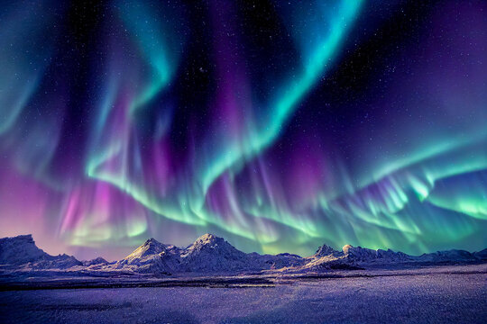

What is the Aurora Borealis?

the aurora borealis also known as the northern lights is an interaction of the
solar wind and the Earth's magnetic field creates a pretty light in the sky.
~~~~~~~~~~~~~~~~~~~~~~~~~~~~~~~~~~~~~~~~~~~~~~~~~~~~~~~~~~~~~~~~~~~~~~~~~~~~
Is the Aurora Borealis harmful
the northern lights are not typically harmful to humans directly, but they can pose risks to modern technology and infrastructure.
One of the most notable dangers is to power grids.
*****************************************************************************************************
more information:
yesterday we had an Aurora Borealis here in the US, only seen in the most darkest parts of NY due to the
charged particles from the Sun get captured in Earth's magnetic field lines, and funnel down towards the poles.